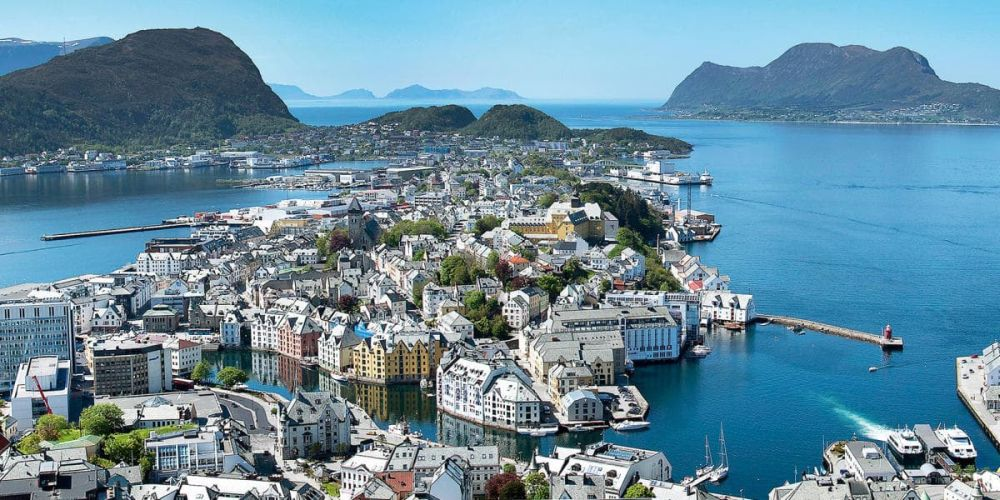

Descoperă Ålesund - O călătorie în Norvegia
Ålesund este un oraș pitoresc situat pe coasta Norvegiei, oferind o varietate de atracții captivante pentru vizitatori:
-

Arhitectura Art Nouveau din Ålesund - Frumusețe arhitecturală
Explorați străzile cu clădiri Art Nouveau remarcabile și admirați designul lor artistic unic.
-

Fiordele din împrejurimile Ålesund - Peisaje naturale
Bucurați-vă de excursii în jurul minunatelor fiorde norvegiene, care oferă priveliști spectaculoase.
-

Acvariul din Ålesund - Lumea marină
Vizitați acvariul pentru a explora biodiversitatea marină a regiunii și a vedea specii fascinante.
-

Punctele de vedere din Ålesund - Priveliști panoramice
Urcați pe dealurile locale pentru a vă bucura de panorame uluitoare asupra orașului și a împrejurimilor.
-

Muzeul de Istorie Maritimă din Ålesund - Povestea marinăriei
Descoperiți istoria bogată a navigației norvegiene și a vieții de pe mare în acest muzeu captivant.
Concluzii
Ålesund oferă o experiență autentică într-un decor pitoresc norvegian, cu o combinație de cultură, natură și istorie.